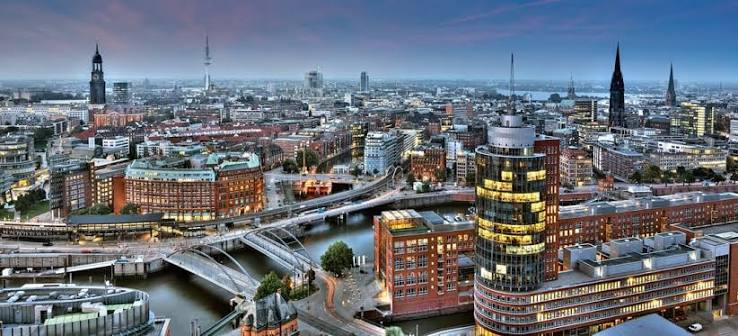
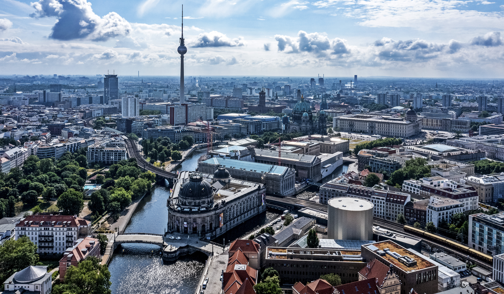
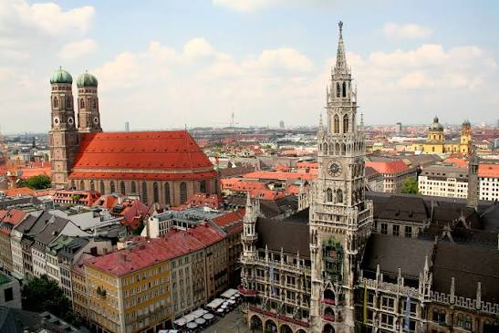

Hamburg
Hamburg is one of Germany's three city-states alongside Berlin and Bremen, and is surrounded by Schleswig-Holstein to the north and Lower Saxony to the south.

Aerial view of Hamburg's historic Speicherstadt district and cityscape at dusk.
Berlin
Berlin is the capital and largest city of Germany, located in the northeastern part of the country along the Spree River.

Spree river, Museum Island, Berlin TV Tower and Berlin Palace in Mitte
Munich
the capital and largest city of the federal state of Bavaria in southern Germany, sitting along the Isar River north of the Alps.

Panoramic view of the Munich old town skyline in Germany.
Assistance and Questions
Which German city is famous for its historic Speicherstadt (the world's largest warehouse district) and its extensive canal network?
Hamburg is famous for its historic Speicherstadt and over 2,500 bridges, making it a city with more canals than Venice and Amsterdam combined.
What is the historic name of the grand boulevard in central Berlin that runs from the Brandenburg Gate to the former city palace?
The historic grand boulevard in central Berlin that runs from the Brandenburg Gate to the former city palace is Unter den Linden.
Which famous annual folk festival, originally held to celebrate a royal wedding in 1810, takes place in Munich every autumn?
The famous annual folk festival that takes place in Munich every autumn is Oktoberfest.